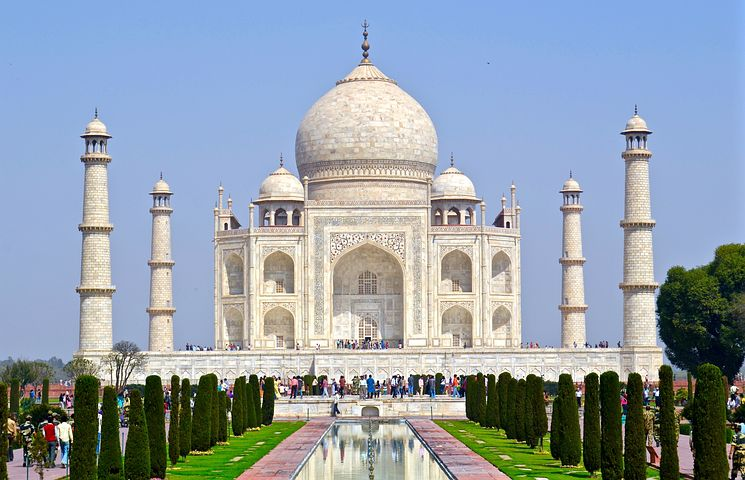

Image Gallery
Taj Mahal (India)

The Taj Mahal is one of the seven wonders of the world. It is an ivory-white marble mausoleum on the south bank of the Yamuna river in the Indian city of Agra. It was commissioned in 1632 by the Mughal emperor, Shah Jahan (reigned from 1628 to 1658), to house the tomb of his favourite wife, Mumtaz Mahal.
Christ the Redeemer (Brazil)

The statue of Christ the Redeemer was completed in 1931 and stands 98 feet (30 metres) tall, its horizontally outstretched arms spanning 92 feet (28 metres). The statue has become emblematic of both the city of Rio de Janeiro and the whole nation of Brazil.
Great Wall of China (China)

The Great Wall of China is an ancient wall in China. The wall is made of cement, rocks, bricks, and dirt. It was finished in 1878 and it was meant to protect the north of the empire of China from enemy attacks. It is the longest structure humans have ever built. It is about 21,196 kilometers long, 9.1 metres (30 feet) wide and 15 metres high.
Colosseum (Italy)

- The Colosseum in Rome, Italy, is a large amphitheater that hosted events like gladiatorial games.
- The Colosseum, also named the Flavian Amphitheater, is a large amphitheater in Rome.
- It was built during the reign of the Flavian emperors as a gift to the Roman people.
Machu Picchu (Peru)

- Machu Picchu , Ancient fortress city of the Incas in the Andes Mountains, south-central Peru. Perched near Cuzco in a narrow saddle between two sharp peaks, at an elevation of 7,710 ft (2,350 m), it escaped detection by the Spaniards, and its existence was made known only in 1911 by U.S. explorer Hiram Bingham.
- One of the few pre-Columbian urban centres found nearly intact, it is about 5 sq mi (13 sq km) in area and includes a temple and a citadel.
- The period of occupancy is uncertain. Made a UNESCO World Heritage site in 1983, it is a popular tourist attraction.
Gemini Solutions

Comapny Website